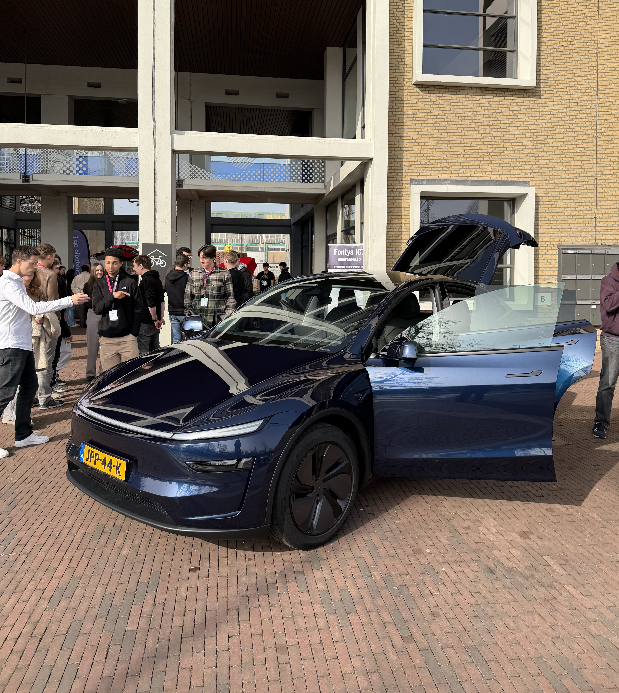
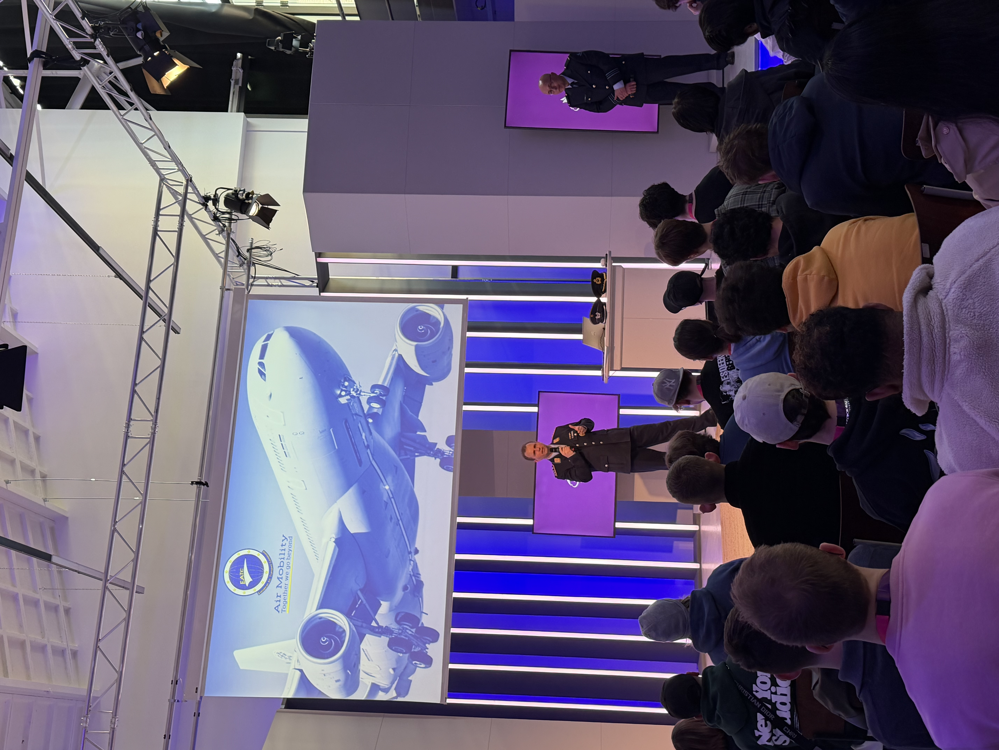

The first day of the exchange is finished. With a packed schedule and a long day of traveling behind us, we were all exhausted.
A warm welcome
We started the day off with an introductory session to map out the week. The format is pretty straightforward: daily inspiration sessions or workshops in the morning and afternoon, followed by dedicated group blocks where we actually work on the main assignment.
This year's primary assignment comes from DAF Trucks, and they want us to solve one of two major issues currently hitting the transport industry:
- Women's safety on the road.
- Attracting more employees to the truck driving profession.
After the intro, we all got up to collect our name tags, and we had some time to mingle with the other exchange students before the first workshop began.
Tesla propaganda
We started off strong, with an inspiration session from Tesla. A few people from the Gigafactory came down to Eindhoven to talk about the software logistics behind their car shipments, diving into things like IoT, factory robotics, and automated tracking. It was definitely interesting to see how they handle scale, but they also pitched a second option for the week's assignment:
Finding the most efficient way to organize outgoing cars in the parking lot for transport pickup.
Honestly, it felt a bit lazy compared to the DAF challenges, so our team was not interested.

Big data
The second session shifted focus towards Big Data, specifically, who is collecting your data, what they are using it for, and, most importantly, how you can take control of your privacy. While the core topic is always relevant, the presentation felt a bit drawn out for the amount of actual content they covered. Still, it was a decent overview.
European Air Transport Command
Honestly, before this session, I did not know the EATC existed, but hearing them talk about how they operate out of Eindhoven Air Base was easily my favorite part of the entire day.
They are a unified seven-nation military alliance that acts as a system to optimize European air mobility. Instead of each country operating expensive fleets, they pool 170 aircraft under a single command structure to do global air transport, mid-flight refueling, and medical evacuations.
They do this without any money changing hands. The nations request flights and exchange services using an in-house software system called MEAT and a virtual currency called ATARES. You earn credits when you fly a mission for a partner nation and spend them when you need assets from another country.
Again, this was the coolest inspiration session by far.

Cultural Tasting
After a day of listening, planning, and meeting our teams for the week, it was time for a good hangout. Every school's group was supposed to bring a delicacy from their home country or city for all to taste. This ended up being a bit funny since there were 4 schools from Belgium, meaning a lot of chocolate was eaten.
This was also the perfect place to meet new people. Every person there was open for a chat and I can confidently say we made some real connections.